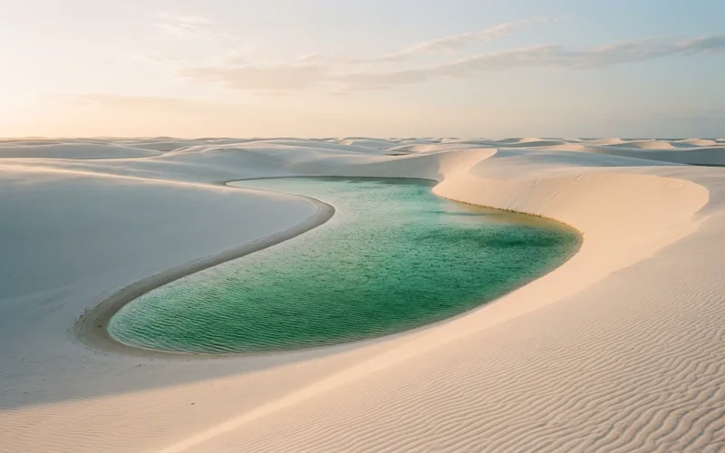
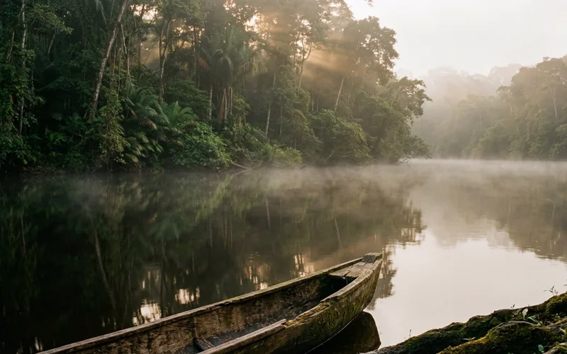

Maraú Peninsula, Bahia
Praia de Algodões
Boutique pousada
Warm tide, coastal forest, and unhurried light.
A little more space
There is no need to fill
every moment.
01 / Experience
Slow · Small · Brazil
In a life devoted to the weight of human words, silence is not an absence. It is the living presence of the unspoken.
We gather intimate circles of eight to ten practitioners in secluded sanctuaries of Brazil. Here, where the landscape asks nothing to be analyzed or diagnosed, the mind uncoils. The tide, the canopy, and the warm earth speak without language—leaving room for true silence to emerge. Conversation arises only when it wants to; stillness requires no defense.
02 / Brazil
Brazil is not a backdrop; it is the presence that commands the pace.
From the warm coastal forest of Bahia to the wind-swept lagoons of Maranhão and the mirrored currents of the Amazon, each SILENCE journey stays with one region—leaving room to listen.
03 / Journeys
Eight to ten guests, seven nights, and days paced by the elements. Each SILENCE journey stays with one region—a considered boutique base, local dining, and generous unscheduled hours where silence is the heart of the experience.
Maraú Peninsula, Bahia
Boutique pousada
Warm tide, coastal forest, and unhurried light.

Lençóis Maranhenses, Maranhão
Boutique pousada
Wind-carved white sand and still rainwater under an open sky.

Amazon region
Boutique lodge
Morning mist over mirrored waters, where the river sets the pace.
Flights, ground transport, curated meals, and attentive hosting are held with care across all journeys.
04 / Who it’s for
For psychologists, psychotherapists, psychoanalysts, and psychiatrists who are curious about place, open to cultural exchange, and comfortable sharing a small-group journey.
A considered way to begin
We reach out to practitioners whose work and interests align with the journey.
Tell us about your practice and what draws you to slow travel.
A one-to-one exchange to share details and see whether the journey feels right.
05 / Testimonials
Notes from psychoanalysts, psychologists, and psychiatrists who traveled with SILENCE.
“In Manhattan, clinical listening is an act of holding back an overwhelming tide of language. At Algodões, between the reef and the coastal forest, silence was no longer something to interpret—it became an unburdened presence. A rare space where attention simply rests.”
“Academic and social life demand continuous performance. In Atins, sharing the vast dunes and quiet freshwater lagoons with eight peers carried zero social expectation. The silence wasn’t awkward or enforced; it was a generous common ground.”
“The sensory cadence of the Amazon river at dawn settles chronic clinical vigilance like nothing else. For eight unhurried days, the mind re-calibrates to the slow rhythm of water and canopy. An essential restoration of quiet.”
A note on the intention
SILENCE is shaped by a belief in considered hospitality: a place with its own character, a pace that leaves room for listening, and the company of people who understand the value of attention.
The thinking behind SILENCEA few clear answers
No. SILENCE is not a clinical seminar, training programme, or performative itinerary—there are no lectures, clinical sessions, or continuing education credits. It is an unhurried travel experience held with restraint, where words need no rehearsal and silence is a shared sanctuary.
Psychologists, psychotherapists, psychoanalysts, and psychiatrists interested in a thoughtful, small-group journey in Brazil.
Each journey is designed for a group of eight to ten guests.
Flights, ground transport, the full meal plan, and attentive hosting are shared transparently with each invitation before a booking is confirmed.
Begin a conversation
Share a little about your practice and the kinds of places and experiences that interest you. We’ll be in touch personally.
We ask about your professional interests, never personal health information.
This prototype does not transmit or store form submissions.
Thank you. We will be in touch personally.